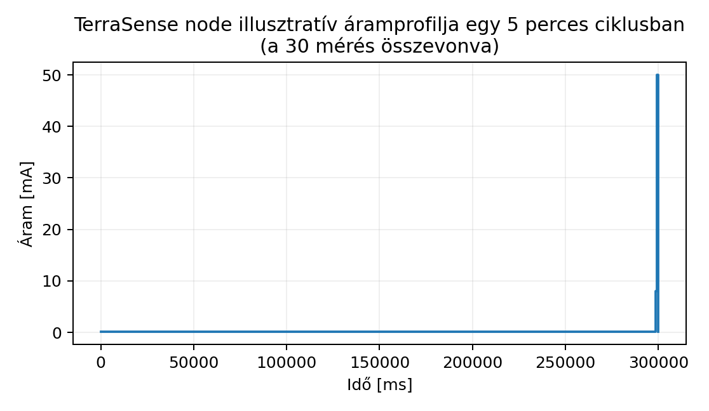
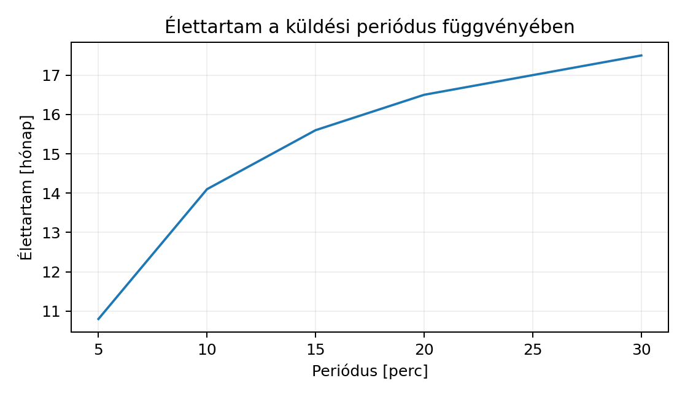

A TerraSense üvegházban a talajnedvesség- és klímaszenzorok elemes
csomópontok, amelyeket a termelő nem akar havonta cserélni. A nem funkcionális követelmények között rögzítettük,
hogy a ts-node eszközöknek legalább 12 hónapig kell
működniük egyetlen elemszettel. Ha ezt a számot rosszul becsüljük, akkor
a terepre telepített eszközök idő előtt elnémulnak, és a karbantartás
költsége felemészti a rendszer előnyeit.
Az energiafogyasztást nem elég egyetlen pillanatban megmérni. Az IoT-csomópontok tipikusan rövid aktív fázisokból és hosszú alvó fázisokból álló ciklusokban működnek, ezért az átlagos áramfelvétel a különböző állapotok áramából és időtartamából kiindulva számítható. Ebben az alfejezetben felépítjük ezt a duty-cycle energiamodellt, kiszámítjuk a TerraSense csomópont élettartamát, és megvizsgáljuk, melyik fogyasztási tétel csökkentése éri meg leginkább.
A rádiós szenzorcsomópont munkaciklusa olyan állapotok sorozatára bontható, amelyek rendre ismétlődnek. A leggyakoribb állapotok:
Definíció (munkaciklus, duty cycle). A munkaciklus az aktív (nem alvó) idő aránya a teljes ciklusidőhöz képest:
ahol a ciklusidő, pedig az egyes aktív állapotok időtartama. Az IoT-eszközök gyakran értékkel dolgoznak, például egy 5 percenként 1 másodpercig adó csomópont esetén .
Definíció (állapotok áramfelvétele). Egy vezeték nélküli szenzorcsomópont jellemző fogyasztási állapotai:
Ezek az értékek nagyságrendi becslések, amelyek a konkrét mikrovezérlő és rádió adatlapjából ellenőrizendők.
A teljes ciklusidő az egyes állapotidők összege:
Az átlagáram a súlyozott középérték:
Legyen a ciklus állapotból álló sorozat, ahol az -adik állapotban az eszköz áramot vesz fel ideig. A ciklus alatt elfogyasztott töltés:
Ezt a ciklusidővel elosztva kapjuk az átlagáramot:
Ha az elem hasznos kapacitása (mAh), akkor a várható élettartam órában:
ahol mA-ben adott. Az élettartam hónapban, ha egy hónapot 30 nappal, egy napot 24 órával számolunk:
Az önkisülést kétféleképpen vehetjük figyelembe. Az egyszerűbb módszer a névleges kapacitást csökkenti egy biztonsági tényezővel: például a TerraSense két sorba kötött AA lítium (Li-FeS₂) elemének névleges, kb. 3000 mAh-s kapacitásából (3,0 V, ≈32,4 kJ, lásd Nem funkcionális követelmények: energia, költség, élettartam, megbízhatóság, biztonság) 20% tartalék levonásával mAh-val számolunk. A pontosabb modell az önkisülést ekvivalens szivárgási áramként adja hozzá az átlagáramhoz:
ahol az elem kémiai önkisüléséből származó folyamatos veszteség. Évi 2% kapacitásveszteség egy 3000 mAh névleges elemnél körülbelül 60 mAh/év, azaz µA ekvivalens áram; ha ugyanezt a 2400 mAh effektív kapacitásra vetítjük, µA adódik. A továbbiakban a kapacitástartalékos módszert használjuk, mert az könnyebben kezelhető a gyakorlatban.
Az áramfelvétel időben nem folytonos, hanem lépcsős függvény. Az alábbi ábra egy TerraSense-csomópont egyetlen ciklusának illusztratív áramprofilját mutatja.

Az ábrán az időtengely a ciklus végétől visszafelé mutatja az aktív szakaszokat: az eszköz az első 298,4 másodpercben (298400 ms) alszik 0,15 mA-rel, majd összesen 600 ms-ig mér 8 mA-rel (a 10 s-os mintavétel 30 db, egyenként 20 ms-os mérése az ábrán egyetlen szakaszba vonva), 700 ms-ig ad 50 mA-rel, végül 300 ms-ig vétel üzemmódban van 25 mA-rel. A lépcsők magassága az állapotra jellemző áram, a szélessége az állapot időtartama; a lépcsők alatti terület a ciklus alatt elfogyasztott töltés.
A 300 s-os tengelyen az 1,6 s-os aktív szakasz alig látszik, ezért az alábbi ábra törött időtengellyel rajzolja újra ugyanazt a ciklust: az alvást összenyomva, az aktív szakaszt kinagyítva. Mellette a töltés megoszlása és az élettartam a periódus függvényében látható; az interaktív változatban a paraméterek csúszkával állíthatók.
A domináns fogyasztási tag meghatározásához nem elég az áramértékeket nézni, az időtartamokkal súlyozott töltést kell összevetni. Az alábbi táblázat a TerraSense csomópont 5 perces ciklusának állapotait hasonlítja össze.
| Állapot | Áram (mA) | Időtartam (s) | Töltés (mA·s) | Részesedés |
|---|---|---|---|---|
| Alvás | 0,15 | 298,4 | 44,76 | 48,5% |
| Mérés (30 × 20 ms) | 8 | 0,6 | 4,80 | 5,2% |
| Rádió TX | 50 | 0,7 | 35,00 | 37,9% |
| Rádió RX | 25 | 0,3 | 7,50 | 8,1% |
| Szelep (napi 2 impulzus, átlag) | – | – | 0,22 | 0,2% |
| Összesen | – | 300 | 92,28 | 100% (kerekítés miatt a részek összege 99,9%) |
A táblázatból látható, hogy a legnagyobb áramú TX állapot csak a második legnagyobb tétel, mert az alvási szakasz hosszú időtartama miatt a kicsi alvási áram is jelentős töltést fogyaszt. Ezért a gyakorlatban gyakran az alvási áram csökkentése (például mélyebb alvó üzemmód, perifériák lekapcsolása) éppolyan fontos, mint a rádió adásidejének rövidítése.
Kompromisszumok és tervezési döntések:
A következő számításban a ts-node csomópont egy
lehetséges, illusztratív paraméterkészletét használjuk. Az értékeket a
kiválasztott mikrovezérlő és rádió adatlapjából kell ellenőrizni, de a
nagyságrendek tipikusak.
Feltételezett állapotok és paraméterek:
A ciklusidő perc = 300 s, ciklusonként 30 mérés (összesen 0,6 s). Az alvási idő:
A ciklus alatt elfogyasztott töltés:
A szelep ciklusonkénti járuléka mA·s.
Az átlagáram:
Az élettartam hónapban:
Ez nem éri el a 12 hónapos követelményt.
A ciklusidő perc = 600 s, ciklusonként 60 mérés (összesen 1,2 s). Az alvási idő:
A töltés:
A szelep járuléka mA·s.
Az átlagáram:
Az élettartam:
A 10 perces telemetriai ciklussal a számított élettartam 14,1 hónap, azaz a 12 hónapos követelményhez képest 2,1 hónap a tartalék, ami a becslés bizonytalanságához képest szűk. (A korábbi, egyetlen mérést számoló egyszerűsítés ennél kedvezőbb eredményt adott volna; a 10 s-os mintavétel mind a 60 ébredését és a szelepet is számolni kell.) Ez az érték becslés, nem verifikáció: a bemenő áramok és idők adatlapi nagyságrendek, a modell pedig elhanyagolja a hőmérséklet hatását, az önkisülést, az elem terhelhetőségét és a tápfeszültség-átalakító veszteségeit. A 10 perces ciklus ezért tervezési döntés, amelyet méréssel kell igazolni; a követelmény teljesülését önmagában ez a számítás nem bizonyítja.
Az alábbi ábra az élettartam alakulását mutatja a küldési periódus függvényében, változatlan aktív állapotidők mellett.

A görbe ellaposodik: minél ritkább a küldés, annál inkább az alvási áram dominál, és a periódus további növelése egyre kevesebb élettartam-növekedést hoz. 5 percről 10 percre váltva több mint 3 hónappal nő az élettartam, 20 percről 30 percre váltva viszont már csak alig több mint 1 hónappal. (A 10 s-os mintavétel miatt a mérések száma a periódussal arányosan nő, ezért a görbe lassabban telít, mint egyetlen mérésnél.)
Továbbvitt eredmény. A fenti paramétereket és a 10
perces periódust rögzítjük a
~/iot-labor/i016/energy-model.md fájlban. Ezt a modellt
használja az Alvómódok és energiatakarékos
szoftvertervezés alfejezet az alvási állapotok finomításakor, a Rádiós technológiák összevetése alfejezet a rádió
kiválasztásakor, és a LoRaWAN: nagy hatótáv kis
energiával alfejezet a LoRa adás energiaigényének becslésekor. A
fájl tartalma:
# TerraSense ts-node energiamodell (i016)
Periódus: 600 s (10 perc), mintavétel: 10 s (60 mérés/ciklus)
Állapotok:
alvás: 0,15 mA, idő: 597,8 s
mérés: 8 mA, idő: 60 x 0,02 s
rádió TX: 50 mA, idő: 0,7 s
rádió RX: 25 mA, idő: 0,3 s
szelep: 2 impulzus/nap, 3,0 V, 0,5 A, 50 ms (62,5 mA·s/nap)
Átlagáram: 0,2370 mA
Elem: 2 x AA Li-FeS2, 3,0 V, hasznos kapacitás: 2400 mAh
Számított élettartam: 14,1 hónap
Megjegyzés: az áramértékek illusztratívak, a választott hardver adatlapjából ellenőrizendők.
Megjegyzés: a 14,1 hónap becslés, nem verifikáció; a hiányzó
tényezőket lásd a becslés korlátai szakaszban.A duty-cycle számítás akkor ad használható eredményt, ha a bemenő paraméterek méréssel igazoltak, és a modell minden lényeges fogyasztót tartalmaz. A 14,1 hónapos érték a következő tényezők nélkül készült:
| Tényező | Hatás a becslésre | Kezelés |
|---|---|---|
| Hőmérséklet | Alacsony hőmérsékleten csökken az elem hasznos kapacitása és nő a belső ellenállása; a magas hőmérséklet gyorsítja az önkisülést | A legrosszabb üvegházi hőmérsékleten kell mérni és számolni |
| Önkisülés | A névleges kapacitás évente akár 2%-a is elveszhet; ez a 20%-os tartalék egy részét felemészti | Ekvivalens szivárgási árammal vagy nagyobb tartalékkal kell számolni |
| Elem terhelhetősége | Az 50 mA-es TX-csúcs a kis elem belső ellenállásán feszültségesést okozhat, ami újrainduláshoz vagy adáskimaradáshoz vezet | Ellenőrizni kell az adatlap pulzus-terhelhetőségét; szükség esetén nagyobb elem vagy pufferkondenzátor kell |
| Tápfeszültség-átalakító | A boost/buck átalakító hatásfoka jellemzően 80–90%, emellett saját nyugalmi árama van | A terhelési áramot a hatásfokkal osztva, a nyugalmi áramot hozzáadva kell számolni |
| Szelep | A bistabil szelep impulzusonként 0,5 A-t vesz fel 3 V-on, 50 ms-ig; a modell napi két impulzussal számol (az átlagos töltés 0,2–0,3%-a) | A szelepenergia benne van a modellben; a folyamatosan gerjesztett (NC) szelep nem fér az elemes költségkeretbe |
Számszerűen: ha a csomópont a 3,0 V-os elemről 3,3 V-os sínt állít elő boost-konverterrel 85%-os hatásfokkal, és az átalakító nyugalmi árama 2 µA, akkor az elemoldali átlagáram mA, amiből az élettartam hónap. Az önkisülés 2%/év a 3000 mAh névleges kapacitásnál körülbelül 60 mAh/év, azaz hozzávetőleg 6,8 µA folyamatos ekvivalens áram; ezt hozzáadva az átlagáram 0,3156 mA, az élettartam pedig mintegy 10,6 hónap. Az átalakító vesztesége és az önkisülés tehát együtt a 12 hónapos határ alá viszi a becslést, holott a 14,1 hónapos alapérték még felette volt. (Ha a mikrovezérlő és a rádió közvetlenül a 3,0 V-os elemről működik, az átalakító vesztesége elmarad; ezt az adatlapokból kell eldönteni.)
A tervezési tartalék (a 20%-os kapacitáscsökkentés) nem mérési eredmény, hanem tudatos biztonsági sáv. A mérési bizonyíték ezzel szemben csak valós eszközön, hiteles műszerrel felvett áramprofilból és kapacitástesztből származhat: oszcilloszkóp és söntellenállás az állapotidőkre és csúcsáramokra, energia-analizátor a ciklusonkénti töltésre, valamint hőkamrás vagy legalább szélső hőmérsékletű mérés a kapacitásra. A 12 hónapos követelmény teljesülését akkor lehet kijelenteni, ha a mért átlagáram a tervezési tartalékkal együtt is legfeljebb mA.
A számított élettartam csak annyira pontos, amennyire az állapotidők és az áramértékek helyesek. A valós hardveren végzett méréshez az alábbi eszközök használhatók:
A native_sim környezet nem modellezi a valós hardver
energiafogyasztását, ezért az energiamérést mindig valós
fejlesztőkártyán vagy célhardveren kell elvégezni. A mérési összeállítás
pontossága és az eszközök specifikációja ellenőrizendő.
| Hibatünet | Lehetséges ok | Javítás |
|---|---|---|
| A mért élettartam lényegesen rövidebb | Rossz állapotidő (pl. a rádió inicializálása hosszabb) | Oszcilloszkóppal mérje meg a tényleges időket, és frissítse a modellt |
| A számított átlagáram alacsonyabb a mértnél | Elhanyagolt perifériák (pl. LED, szenzor fűtése) | Azonosítsa az összes fogyasztót, és vegye fel az állapotok közé |
| Az élettartam nem lineárisan nő a periódussal | Az alvási áram dominál, a rádióhatás kicsi | Csökkentse az alvási áramot vagy a rádió vételi ablakát |
| Az elem kapacitása idő előtt elfogy | Önkisülés vagy hőmérsékletfüggő kapacitáscsökkenés | Használjon nagyobb tartalékot, és mérje a hőmérsékleti profilt |
Csak az aktív áramot nézik, az alvási áramot elhanyagolják. A fenti 5 perces példában az alvási állapot adja a töltés közel felét (a 10 perces ciklusban több mint felét), annak ellenére, hogy árama több mint két nagyságrenddel (kb. 330-szor) kisebb a TX-áramnál. A hosszú időtartam miatt a kis alvási áram is domináns lehet.
Az önkisülést figyelmen kívül hagyják. Egy 3000 mAh névleges kapacitású elem évek alatt önkisüléssel is veszít kapacitásából. Ha a csomópontot 10 évre tervezik, az önkisülés akár nagyobb is lehet, mint a hasznos fogyasztás.
A periódusidőt és az állapotidőket különböző mértékegységben adják meg. Ha a periódus másodpercben, az állapotidőket pedig milliszekundumban számolják, az átlagáram több nagyságrenddel téves lesz. Ügyelni kell az egységes másodperc- vagy óra-alapú számításra.
A rádió RX ablakát túl hosszúra veszik. Az eszközök gyakran hosszú vételi ablakot nyitnak a parancsok fogadására, de ez az energiafogyasztás jelentős forrása. A vételi ablakot a parancs-késleltetési követelmény és az energiafogyasztás közötti kompromisszumként kell megválasztani.
Miért nem elegendő a csúcsáram ismerete az elem élettartamának becsléséhez? Milyen további adatokra van szükség?
Egy szenzorcsomópont ciklusideje 2 perc. Az állapotok: alvás 1 mA 119,5 s, mérés 10 mA 0,2 s, TX 40 mA 0,2 s, RX 20 mA 0,1 s. Az elem hasznos kapacitása 1500 mAh. Számítsa ki az átlagáramot és az élettartamot hónapban!
A TerraSense modellben változtassa a periódust 5 percről 15 percre,
és frissítse a ~/iot-labor/i016/energy-model.md fájlt!
Számítsa ki az új átlagáramot és élettartamot, majd hasonlítsa össze a
10 perces eredménnyel!
Egy valós mérés során az eszköz élettartama 6 hónap lett a számított 12 helyett. Felsorolja a lehetséges okokat és a javítási lépéseket! Melyik mérési módszerrel azonosítaná a hibát?
A csúcsáram csak az egyik állapot pillanatnyi fogyasztását adja meg. Az élettartamhoz az összes állapot áramát és időtartamát ismerni kell, mert a hosszú alvási szakaszok kis árammal is jelentős töltést fogyasztanak. Képlet: .
Periódus: s. Alvási idő: s. Töltés: mA·s. Átlagáram: mA. Élettartam: hónap.
15 perc = 900 s, 90 mérés (1,8 s). Alvási idő: s. Töltés: mA·s. Átlagáram: mA. Élettartam: hónap. A 10 perces eredmény 14,1 hónap, tehát a 15 perces periódus 1,5 hónappal növeli az élettartamot. A fájl frissítése: a periódust 900 s-ra, az alvási időt 897,2 s-ra, a mérések számát 90-re, az átlagáramot 0,2135 mA-re, az élettartamot 15,6 hónapra kell állítani.
Lehetséges okok: (a) az alvási áram nagyobb a feltételezettnél (pl. nem kapcsolják le a perifériákat); (b) a rádió RX ablak hosszabb; (c) az elem kapacitása a hőmérséklet vagy a gyártási szórás miatt kisebb; (d) az önkisülés nagyobb. Az azonosításhoz oszcilloszkóppal és söntellenállással mérje meg az áramprofilt, hasonlítsa össze a modell állapotaival, és mérje az elem tényleges kapacitását. A hibás állapotokat egyesével korrigálva a számított élettartam a mért értékhez közelíthető.
A duty-cycle energiamodell az eszköz ciklikus működését állapotokra
bontja, és az átlagáramot az egyes állapotok áramának időtartammal
súlyozott összegeként számítja:
.
A TerraSense csomópont illusztratív paramétereivel (10 s-os mintavétel,
napi két szelepimpulzus, 2 db AA lítiumelem,
mAh) 5 perces periódusnál 10,8 hónap, 10 percesnél 14,1 hónap élettartam
adódik. Ez azonban becslés, nem verifikáció: a 2,1 hónapos tartalék
szűk, és az átalakító veszteségével, valamint az önkisüléssel együtt az
érték már 10,6 hónap körülire csökken. A 10 perces ciklus követelménye
csak méréssel igazolható. A domináns tétel nem feltétlenül a legnagyobb
áramú TX, hanem gyakran az alvási állapot. Továbbvitt
eredmény: a modell paraméterei a
~/iot-labor/i016/energy-model.md fájlban vannak; ezt
használja az Alvómódok és energiatakarékos
szoftvertervezés, a Rádiós technológiák
összevetése és a LoRaWAN: nagy hatótáv kis
energiával.
Az alfejezetben használt áram- és időértékek illusztratív
nagyságrendek, amelyeket a kiválasztott mikrovezérlő és rádió
adatlapjából kell ellenőrizni. A mérőeszközök (multiméter,
oszcilloszkóp, energia-analizátor) pontos specifikációja és a mérési
összeállítás kalibrálása szintén ellenőrizendő. Az önkisülés mértéke az
elem típusától és a hőmérséklettől függ, ezért a gyártói adatlap és a
mérési környezet figyelembevétele szükséges. A Zephyr
native_sim környezet energiafogyasztása nem reprezentatív,
ezért az energiamérést valós hardveren kell elvégezni.